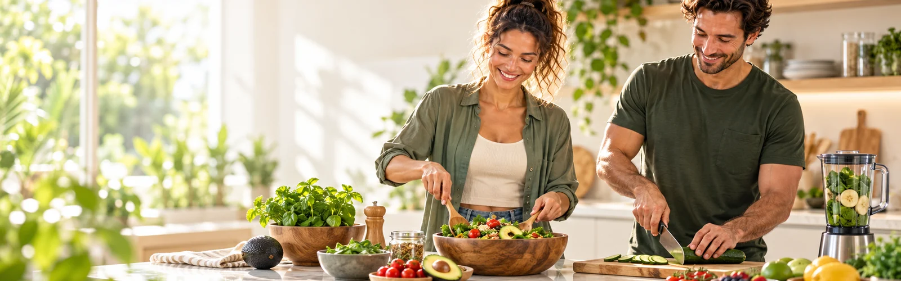
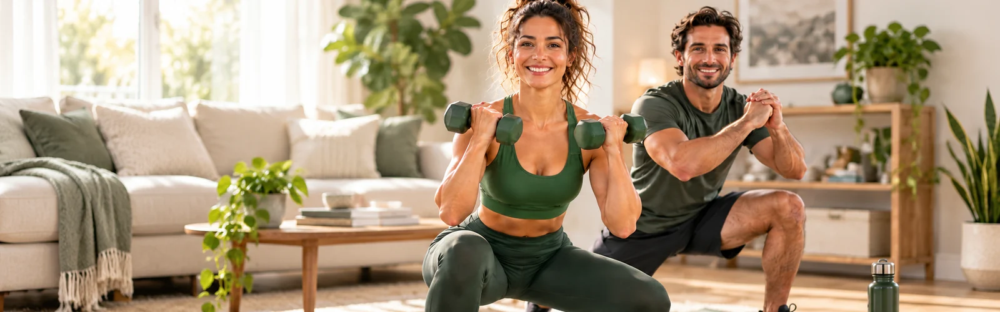

Crie seu perfil
Faça seu cadastro de forma simples para começarmos a organizar uma experiência mais adequada para você.
Alimentação, movimento e receitas reunidos em um só lugar — para tornar sua rotina mais equilibrada, visual e fácil de manter.

No Active Vida Leve, alimentação, movimento e receitas práticas se unem para tornar seu dia mais equilibrado e fácil de manter.
Em poucos passos, você acessa conteúdos organizados para tornar seu dia mais prático, ativo e equilibrado.
Faça seu cadastro de forma simples para começarmos a organizar uma experiência mais adequada para você.
Após a assinatura, seu acesso ao portal é liberado para você aproveitar todas as áreas disponíveis.
Encontre alimentação, exercícios e receitas organizados em um só lugar, prontos para o dia a dia.
Áreas pensadas para facilitar escolhas práticas, movimento no dia a dia e mais variedade na alimentação.
Conteúdos de alimentação pensados para o dia a dia, sem complicação.
Exercícios que cabem no seu tempo e no seu espaço.
Receitas e sucos leves para variar o cardápio com praticidade.
Tudo reunido de forma clara para você encontrar o que precisa.
Uma prévia das principais áreas que estamos construindo para o Active Vida Leve.

Conteúdos e trilhas organizados para facilitar escolhas do dia a dia.

Uma prévia visual de treinos, progresso e rotinas dentro da plataforma.
Ideias leves e práticas para variar o dia com mais sabor e praticidade.
Exemplos demonstrativos para ilustrar o visual da seção. Quando houver usuários reais, estes conteúdos serão substituídos pelos feedbacks originais.
“Achei a organização de alimentação bem prática. Os conteúdos ficam com cara de consulta rápida para usar no dia a dia.”
“A navegação está simples e objetiva. Em poucos cliques dá para entender onde ficam as principais áreas do portal.”
“Gostei especialmente da área de receitas. O formato visual deixa tudo mais leve e parece fácil de explorar pelo celular.”
“O que mais me chamou atenção foi a organização. As informações parecem bem distribuídas e sem excesso de texto.”
“No celular a proposta fica bem clara. Os conteúdos parecem pensados para navegar sem precisar ficar ampliando a tela.”
“A área de exercícios passa uma sensação de rotina bem estruturada. Ficou fácil visualizar treinos e etapas.”
“Gostei da forma como os conteúdos de alimentação ficam organizados. Dá para consultar rápido e seguir o dia sem enrolação.”
“A proposta de movimento parece acessível. O visual ajuda a entender o que esperar de cada área.”
É um portal em desenvolvimento que reúne conteúdos de alimentação, exercícios e receitas em uma experiência mais leve, visual e organizada.
Após o cadastro e a ativação da assinatura, você passa a ter acesso às áreas disponíveis no portal.
A estrutura foi preparada para receber novos conteúdos e manter as áreas do portal em evolução.
Não. O conteúdo do portal tem caráter informativo e educativo e não substitui orientação individual de profissionais qualificados.
Sim. A experiência foi pensada para funcionar bem em diferentes tamanhos de tela, inclusive no celular.
Crie sua conta e acompanhe a evolução das áreas que estamos construindo para o Active Vida Leve.